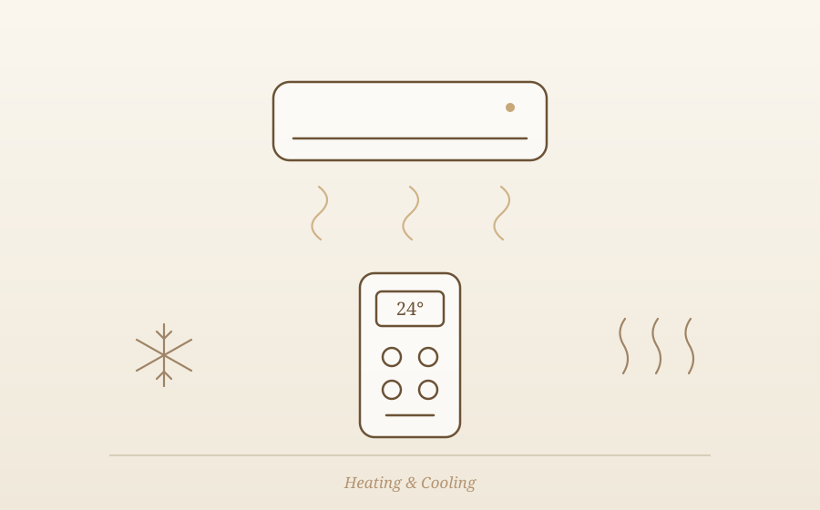
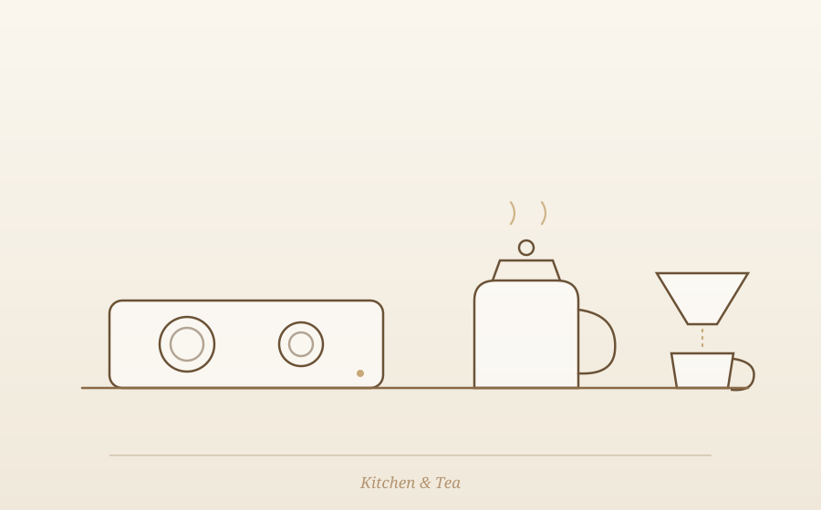

안안에 오신 것을 환영합니다Welcome to ANAN
Welcome to ANAN안안 · A house of quiet peace
100년의 시간이 머무는 이 집에서, 오늘 하루는 온전히 당신의 것입니다. 머무는 동안 궁금한 것이 생기면 이 가이드북을 먼저 열어보세요. 그래도 해결되지 않으면 언제든 저희를 불러주세요. A hundred years live in this house — and tonight, it is entirely yours. If a question comes up during your stay, open this guide first. If it doesn't have the answer, we are always one message away.
확인 필요TBC 전화번호·카카오톡 채널·WhatsApp 링크는 오픈 시 확정 후 연결됩니다. Phone, KakaoTalk and WhatsApp links will be connected at opening.
필수 정보Essentials
Wi-Fi · Access · Check-in
Wi-Fi
Network
ANAN_5G 확인 필요TBC
Password
anan1920! 확인 필요TBC
출입 · Door LockEntry · Door Lock
대문 도어락에 비밀번호를 입력한 뒤 # 버튼을 눌러주세요. 비밀번호는 체크인 당일 문자로 안내드립니다. Enter the passcode on the front-gate door lock, then press #. The passcode is sent to you by message on the day of check-in.
확인 필요TBC 도어락 방식(비밀번호/카드)과 전달 방식 확정 필요 Lock type and delivery method to be finalized
체크인Check-in
15:00 확인 필요TBC
Check-in from 3 PMFrom 3 PM
체크아웃Check-out
11:00 확인 필요TBC
Check-out by 11 AMBy 11 AM
주차 · ParkingParking
북촌 한옥마을 특성상 숙소 앞 주차는 어렵습니다. 인근 공영주차장 이용을 권해드립니다. Street parking is not available in the Bukchon Hanok Village. We recommend using a nearby public parking lot.
확인 필요TBC 제휴·추천 주차장 위치와 요금 확정 필요 Recommended parking location and rates to be finalized
자쿠지 사용법The View Bath
100년의 처마 아래, 오늘의 온도Under the hundred-year eaves, today's temperature
안안의 시그니처, 처마 아래 전망 자쿠지입니다. 아래 순서대로 준비하시면 가장 좋은 온도의 시간을 만날 수 있습니다. ANAN's signature — an open-air view bath beneath the eaves. Follow the steps below for the perfect soak.

배수 마개 잠그기Close the drain plug
욕조 바닥의 마개가 완전히 닫혔는지 먼저 확인해주세요. Make sure the plug at the bottom of the tub is fully closed. 확인 필요TBC
온수 받기Fill with hot water
온수 수전을 열어 물을 받습니다. 적정 수위까지 약 20~30분이 걸립니다. Open the hot-water tap. Filling to the right level takes about 20–30 minutes. 확인 필요TBC
온도 확인Check the temperature
권장 온도는 38~40℃입니다. 들어가기 전 손으로 온도를 확인해주세요. We recommend 38–40℃. Test the water with your hand before stepping in.
사용 후 배수Drain after use
사용을 마치면 마개를 열어 물을 완전히 비워주세요. 다음 사용을 위한 배려입니다. When you finish, open the plug and empty the tub completely — a courtesy for the next soak.
음주 후 이용은 삼가주시고, 15분 이상 연속 입욕 시 잠시 쉬어가세요. 겨울철에는 욕조 주변 바닥이 미끄러울 수 있습니다. For your safety.
Please avoid bathing after drinking, and take a break after 15 minutes of soaking. In winter, the floor around the tub can be slippery.
자주 묻는 질문Frequently asked
- 물이 미지근해요 — 보일러 온수 온도를 확인해주세요. (Chapter IV 참고)
- 야간에도 이용 가능한가요? — 가능합니다. 다만 22시 이후에는 이웃을 위해 조용히 이용해주세요.
- 입욕제를 써도 되나요? — 준비된 입욕제만 사용해주세요. 확인 필요
- The water is lukewarm — check the boiler's hot-water setting. (See Chapter IV)
- Can I use it at night? — Yes. After 10 PM, please keep it quiet for the neighbors.
- Can I use bath salts? — Only the ones we provide, please. TBC
냉난방Heating & Cooling
Air Conditioning · OndolAir conditioning · Ondol floor heating

에어컨 · Air ConditionerAir Conditioner
- 리모컨은 침실 협탁 위에 있습니다. 확인 필요
- 전원 버튼을 누른 뒤, 희망 온도는 24~26℃를 권장합니다.
- 외출 시에는 전원을 꺼주세요.
- The remote is on the bedside table. TBC
- Press power, then set 24–26℃ for comfort.
- Please turn it off when you go out.
확인 필요TBC 에어컨 모델 확정 후 리모컨 사진과 버튼별 안내로 교체 예정 Remote photos and button guide will follow once the model is confirmed
온돌 · 보일러 (겨울)Ondol · Boiler (winter)
- 보일러 조절기는 주방 벽면에 있습니다. 확인 필요
- 실내 난방은 '실온' 모드에서 22~24℃를 권장합니다.
- 온수가 미지근할 때는 '온수' 온도를 한 단계 올려주세요.
- The boiler panel is on the kitchen wall. TBC
- For the heated ondol floor, set room mode to 22–24℃.
- If the hot water runs lukewarm, raise the water temperature one step.
가전 · 비품Appliances & Amenities
Kitchen · Tea · AmenitiesKitchen · Tea · Everyday items

주방 가전Kitchen appliances
- 인덕션 — 전원 터치 후 화력(1~9)을 선택하세요. 냄비를 올려야 작동합니다. 확인 필요
- 전자레인지 — 싱크대 상부장 아래에 있습니다. 확인 필요
- 냉장고 — 웰컴 드링크가 준비되어 있습니다. 자유롭게 드세요.
- Induction cooktop — touch power, then choose heat level 1–9. It works only with a pot placed on it. TBC
- Microwave — below the upper kitchen cabinet. TBC
- Refrigerator — welcome drinks are inside. Help yourself.
커피 · 티 공간Coffee & tea
- 드립 커피 도구와 원두, 그리고 계절의 차가 티 공간에 준비되어 있습니다. 확인 필요
- 전기포트는 다실 선반에 있습니다.
- 다구는 사용 후 가볍게 헹궈 건조대에 올려주세요.
- Pour-over coffee tools, beans, and seasonal teas await in the tea space. TBC
- The electric kettle is on the tea-room shelf.
- After using the tea set, please rinse lightly and leave it on the drying rack.

세탁기 · 건조기Washer & Dryer
- 세탁기와 건조기의 위치는 입주 후 안내드립니다. 확인 필요
- 캡슐 세제가 준비되어 있습니다. 세탁조에 1개 넣고 표준 코스를 선택해주세요. 확인 필요
- 울·실크 등 섬세한 의류는 건조기 사용을 피해주세요.
- The washer and dryer location will be confirmed at opening. TBC
- Detergent capsules are provided — drop one in the drum and select the standard cycle. TBC
- Please keep wool, silk and other delicates out of the dryer.
비품 위치 안내Where to find things
- 수건 · 여분 침구Towels · extra bedding
- 침실 반닫이장Bedroom chest 확인 필요TBC
- 드라이기Hair dryer
- 욕실 수납장Bathroom cabinet
- 어메니티 (샴푸·바디워시)Amenities (shampoo · body wash)
- 욕실 · 자쿠지 옆Bathroom · beside the bath
- 구급함First-aid kit
- 주방 서랍Kitchen drawer 확인 필요TBC
- 우산Umbrellas
- 현관 옆By the entrance
- 보드게임 · 책Board games · books
- 다락The loft
쓰레기 처리Waste & Recycling
Waste & RecyclingKorea sorts waste in three ways
서울은 쓰레기를 세 가지로 나눠 버립니다. 분리가 어려우면 주방에 모아두고 가셔도 괜찮습니다 — 저희가 마무리하겠습니다. Seoul separates waste into three categories. If sorting feels complicated, simply gather everything in the kitchen — we will take care of the rest.
일반 쓰레기General
흰색 종량제 봉투
(주방 서랍)White city bags
(kitchen drawer)
음식물Food waste
노란색 전용 봉투
(싱크대 아래)Yellow food-waste bags
(under the sink)
재활용Recyclables
병·캔·플라스틱·종이
분리 바구니Bottles · cans · plastic · paper
sorting basket
배출 요일 · 장소Collection days & spot
배출은 지정 요일 저녁, 대문 앞 지정 위치에 해주세요. Waste goes out on designated evenings, at the marked spot by the front gate.
확인 필요TBC 가회동 배출 요일·시간·위치 실측 후 확정 (종로구 기준) Exact days, times and spot for Gahoe-dong to be confirmed (Jongno-gu)
하우스룰House Rules
이 집을 아끼는 방법How to care for this house
100년을 견딘 집에는 그만한 이유가 있습니다. 몇 가지만 지켜주시면, 이 집은 다음 100년도 견딜 수 있습니다. A house does not stand for a hundred years by accident. Keep a few small promises, and it will stand for a hundred more.


안안에서의 북촌Bukchon, from ANAN
Bukchon, from ANANThe village at your doorstep
안안은 북촌에서 하늘과 가장 가까운 자리에 있습니다. 대문을 나서면 북촌 8경 중 가장 아름답다고 불리는 풍경이 걸어서 닿는 거리에 있습니다. ANAN sits at the highest point of Bukchon, closest to the sky. Step out the gate, and the most beautiful of Bukchon's eight scenic views is within walking distance.

북촌 8경 · 제4경Bukchon Scenic View No. 4 도보 이동On foot
기와지붕의 물결을 내려다보는 북촌의 대표 조망. 눈 내린 아침이면 하얀 지붕의 너울이 발아래 펼쳐집니다. 이른 아침이나 해 질 무렵이 가장 아름답습니다. Bukchon's signature view — a rolling sea of tiled roofs below. On a snowy morning, the white waves of rooftops spread out at your feet. Most beautiful at dawn and at dusk. 확인 필요: 안안 기준 도보 시간TBC: walking time from ANAN
지도에서 보기Open in Maps아침 산책 코스Morning walk 약 40분About 40 min
안안 → 북촌 8경 골목 → 삼청동 돌계단길 → 카페 거리 → 안안. 관광객이 몰리기 전, 오전 9시 이전의 북촌은 온전히 걷는 사람의 것입니다. ANAN → the scenic-view alleys → Samcheong-dong stone steps → café street → back to ANAN. Before 9 AM, before the crowds arrive, Bukchon belongs entirely to those who walk it.
호스트 추천 — 맛집 · 카페Host's picks — restaurants & cafés
확인 필요TBC 오픈 전 호스트 실방문 기준으로 작성 예정. 상호 · 도보 시간 · 휴무일 · 한 줄 추천 이유 형식으로 5~7곳 큐레이션합니다. To be curated before opening, from places the host has personally visited — 5–7 picks with name, walking time, closing days, and a one-line reason.
편의점 · 약국 · 생활Convenience · pharmacy · daily needs
- 편의점 — 확인 필요: 최단거리 편의점
- 약국 — 확인 필요: 인근 약국 + 심야약국
- 지하철 — 3호선 안국역 (마을 입구 방향)
- Convenience store — TBC: nearest store
- Pharmacy — TBC: nearby + late-night pharmacy
- Subway — Anguk Station, Line 3 (toward the village entrance)
비상시In an Emergency
침착하게, 아래 번호로 바로 연결하세요. 번호를 누르면 즉시 전화가 걸립니다. Stay calm and call directly — tapping a number below places the call immediately.
화재 · 구급Fire & Ambulance
119
Fire & AmbulanceNational emergency line경찰Police
112
PoliceNational police line관광 통역 안내Tourist Hotline
1330
Tourist Hotline (EN/JP/CN)24h interpretation (EN/JP/CN)호스트 직통Host direct
010-0000-0000
확인 필요TBC소화기 위치: 주방 · 현관 확인 필요 · 인근 병원: 확인 필요 (서울대병원 등 실측 후 기재) Fire extinguishers: kitchen · entrance TBC · Nearest hospital: TBC
떠나시기 전에Before You Leave
Before you leaveFive small things, and you're done
다섯 가지만 확인해주시면 충분합니다. 설거지와 침구 정리는 하지 않으셔도 됩니다. Just five things — no need to do the dishes or make the bed.
안안에서의 하루가 오래 남는 기억이 되었기를 바랍니다.
We hope your day at ANAN stays with you for a long time.
A hundred years standing. One night, yours alone.